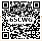
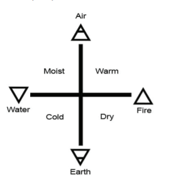
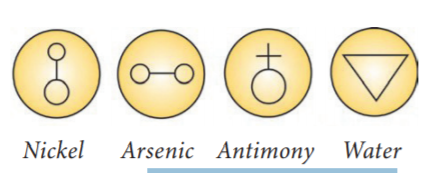
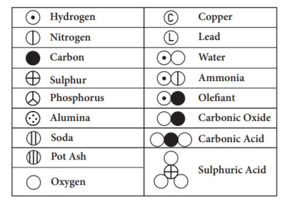
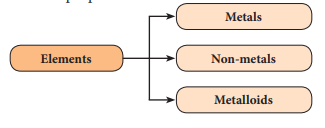
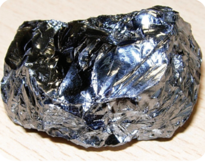
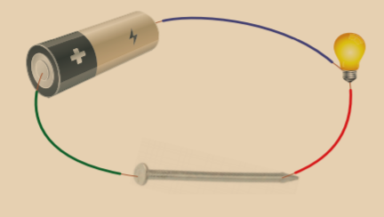
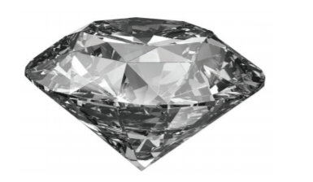

After the completion of this lesson, students will be able to:

In the universe all manifestations, phenomena and evolution of life are caused by matter and energy. All the objects which exist around us are made of some kind of matter. We perceive these objects through our senses like sight, touch, hearing, taste and smelling. A glass tumbler can be seen, agarbatti burning can be recognized by its smell whereas wind blowing can be felt. All kinds of matter possess mass and occupy space. Of course, some are heavy and others are light. Thus, matter can be defined as anything which has definite mass and occupies space.
As we know already, matter exists as solids (wood, stone, sand, iron etc.), liquids (water, milk, fruit juice, etc.) and gases (oxygen, nitrogen, carbon dioxide, steam, etc.). Matter in any physical state is composed of smaller particles such as atom, molecules or ions. An atom is the smallest particle of an element which exhibits all the properties of that element. Atoms of the same element or different elements combine to form a molecule. Atoms or group of atoms having a charge (positive or negative) are called ions.
Hence, atoms are the building blocks of matter. In this lesson, we will study about symbols of elements, metals and nonmetals, compounds of solids, liquids and gases, and the uses of compounds in daily life.
Elements are everywhere. They are the building blocks of everything on Earth: pencil, desk, mountains, car, book, etc. Do you know that when you are breathing you are actually inhaling air? The air you breathe is made up of many elements like oxygen, nitrogen and argon.
An element is a pure substance that cannot be broken down by chemical methods into simpler components. For example, the element gold cannot be broken down into anything other than gold. If you keep hitting gold with a hammer, the pieces would get smaller, but each piece will always be gold.
Elements consist of only one type of atoms. An atom is the smallest particle of an element that still has the same properties of that element.
All atoms of a specific element have exactly the same chemical makeup, size, and mass. Each atom has an atomic number, which represents the number of protons that are in the nucleus of a single atom of that element. There is a total of 118 elements. Many elements occur naturally on Earth; however, some are created in laboratory by scientists.
A symbol is an image, object, etc., that stands for some meaning. For instance, a dove is a symbol of peace. Similarly, we denote mathematical operations by symbols. For example, ‘plus’ denotes addition; ‘minus’ denotes subtraction etc. In the same way in chemistry each element is denoted by a symbol. Writing out the name of an element every time would become too troublesome. So, the name of an element is represented by shortened form called as symbol. Let us learn the brief history of symbols of elements.
a. Greek Symbols
The symbols in the form of geometrical shapes were used by the ancient Greeks to represent the four basic elements around us such as earth, air, fire and water.

b. Alchemist Symbols
In the days of alchemists, different materials that people used were represented by different symbols while they tried to change less valuable metal into gold. That process was called alchemy and the men who did this work were known as alchemists.

c. Dalton Symbols
In thousand eight hundred and right, John Dalton, English scientist tried to name various elements based on pictorial symbols. Those symbols are difficult to draw and hence they are not used. It is only of historical importance.

d. Berzelius Symbols
In 1813, Jon Jakob Berzelius devised a system using letters of alphabet rather than signs. The modified version of Berzelius system follows under the heading ‘System for Determining Symbols of the Elements’.
e. Present system for determining symbols of the elements
1. The symbols of the most common elements, mainly non-metals, use the first letter of their English name.
Table 9 point 1 Elements having first letter as symbol
Element |
Symbol |
Element |
Symbol |
Boron |
B |
Oxygen |
O |
Carbon |
C |
Phosphorus |
P |
Fluorine |
F |
Sulphur |
S |
Hydrogen |
H |
Vanadium |
V |
Iodine |
I |
Uranium |
U |
Nitrogen |
N |
Yttrium |
Y2 |
2. If two elements have same first letter, then the first and second letters of the name are used as symbols. The first letter is in uppercase and the second letter is in lowercase.
Table 9 point 2 Elements with same first letter
Element |
Symbol |
Element |
Symbol |
Aluminium |
A l |
Hydrogen |
H |
Barium |
B a |
Helium |
H e |
Beryllium |
B e |
Nickel |
N i |
Bismuth |
B i |
Neon |
N e |
Bromine |
B r |
Silicon |
S i |
Cobalt |
C o |
Sulphur |
S |
3. If the first two letters of the names of the elements are same, then the symbol consists of first letter and second or third letter of English name that they do not have in common.
Table 9 point 3 Elements with same two letters
Element |
Symbol |
Element |
Symbol |
Argon |
A r |
Calcium |
C a |
Arsenic |
A s |
Cadmium |
C d |
Chlorine |
C l |
Magnesium |
M g |
Chromium |
C r |
Manganese |
M n |
4. Some symbols are used on the basis of their Greek name or Latin name of the elements. There are eleven such elements.
Table 9 point 4 Greek or Latin name of elements
Element |
Latin Name |
Symbol |
Sodium |
Natrium |
N a |
Potassium |
Kalium |
K |
Iron |
Ferrum |
F e |
Copper |
Cuprum |
C u |
Silver |
Argentum |
A g |
Gold |
Aurum |
A u |
Mercury |
Hydrargyrum |
H g |
Lead |
Plumbum |
P b |
Tin |
Stannum |
S n |
Antimony |
Stibium |
S b |
Tungsten |
Wolfram |
W |
5. Some elements are named using the name of the country / scientist / colour / mythological character / planet
Table 9 point 5 Elements named using name of the country, scientist etc.
Name |
Symbol |
Name derived from |
Americium |
A m |
America (Country) |
Europium |
E u |
Europe (Country) |
Nobelium |
N o |
Alfred Nobel (Scientist) |
Iodine |
I |
Violet (Colour, Greek) |
Mercury |
H g |
God Mercury (Mythologic character) |
Plutonium |
P u |
Pluto (Planet) |
Neptunium |
N p |
Neptune (Planet) |
Uranium |
U |
Uranus (planet) |
While writing the symbol for an element, we should adhere to the following rules.
1. If the element has a single English letter as a symbol, it should be written in capital letter.
2. For elements having two letter symbols, the first letter should be in capital followed by small letter
The progress of man towards civilization is linked with the discovery of several metals and non-metals. Even today, the index of prosperity of a country depends upon the amount of metals and non-metals it produces. The wealth of a country is measured by the amount of gold in its reserve.
An element can be identified as metal or non-metal by comparing its properties with the general properties of metals and non-metals. In doing so, we find that some elements neither fit with the metals nor with non-metals. Such elements are called semimetals or metalloids. Elements are classified into metals, non-metals, and metalloids based on their properties.

Iron, copper, gold, silver, etc. that we use in our daily life are metals. The properties and uses of metals are given below.
a. Physical properties of Metals

Activity 1:
Take a battery, few wire pieces, a bulb, a nail and a pencil lead. First connect the nail in the circuit as shown in the figure. Is the bulb glowing? Now, connect the pencil lead in the circuit. What do you observe?

b. Uses of Metals
Elements like sulphur, carbon, oxygen etc. are non-metals. Some of the properties and uses of non-metals are given below.
a. Properties of Non-metals
Activity 2
Strike a metal utensil with a metal spoon. Note the kind of sound emitted. Now, strike a piece of wood charcoal with the same spoon. Do you find difference in the kind of sound produced?
Most metals produce ringing sound when struck i.e. they are sonorous. Non-metals are non-sonorous.
b. Uses of Non-metals

Table 9 point 6 Difference between Metals and Non-metals
Property |
Metal |
Non Metal |
Physical state at room temperature |
Usually solid (Occasionaly liquid)
|
Solid, liquid or gas
|
Malleablity |
Good |
Poor (Usually soft or brittle) |
Ductility |
Good |
Poor (Usually soft or brittle) |
Melting point |
Usually high |
Usually low |
Boiling point |
Usually high |
Usually low |
Density |
Usually high |
Usually low |
Conductivity(Thermal andElectrical) |
Good |
Very poor |
The elements which exhibit the properties of metals as well as non-metals are called metalloids. Examples: Boron, Silicon, Arsenic, Germanium, Antimony, Tellurium and Polonium.
a. Physical properties of Metalloids
b. Uses of Metalloids
A compound is a pure substance which is formed due to the chemical combination of two or more elements in a fixed ratio by mass. The properties of a compound are different from those of its constituents. Water, carbon dioxide, sodium chloride etc. are few examples of compounds. A molecule of water is composed of one oxygen atom and two hydrogen atoms in the ratio 1 is to 2 by volume or 8 is to 1 by mass.
Based on the origin of chemical constituents, compounds are classified as inorganic compounds and organic compounds.
a. Inorganic compounds
Compounds obtained from non living sources such as rock, minerals etc., are called inorganic compounds. Example: Chalk, baking powder etc.,
b. Organic compounds
Compounds obtained from living sources such as plants, animals etc., are called organic compounds. Example: Protein, carbohydrates, etc.,
Both inorganic and organic compounds exist in all three states solids, liquids and gases. Let us learn about some important compounds in solid, liquid and gaseous states. Some compounds that exist in solid state are given in Table 9 point 7.
Table 9 point 7 Compounds in solid state
Compounds |
Consititutent Elements |
Silica (Sand) |
Silicon, Oxygen |
Potassium hydroxide (Caustic potash) |
Potassium, Hydrogen, Oxygen |
Sodium hydroxide (Caustic soda) |
Sodium, Oxygen, Hydrogen |
Copper sulphate |
Copper, Sulphur, Oxygen |
Zinc carbonate (Calamine) |
Zinc, Carbon, Oxygen |
Compounds which exist in liquid state are given in Table 9 point 8.
Table 9 point 8 Compounds in liquid state
Compounds |
Consititutent Elements |
Water |
Hydrogen, Oxygen |
Hydrochloric acid |
Hydrogen, Chlorine |
Nitric acid |
Hydrogen, Nitrogen, Oxygen |
Sulphuric acid |
Hydrogen, Sulphur,Oxygen |
Acetic acid(Vinegar) |
Carbon, Hydrogen,Oxygen |
Some compounds exist in gaseous state also. They are given in Table 9.9.
Table 9 point 9 Compounds in gaseous state
Compounds |
Consititutent Elements |
Carbon dioxide, carbon monoxide |
Carbon, Oxygen |
Sulphur dioxide |
Sulphur, Oxygen |
Methane |
Carbon, Hydrogen |
Nitrogen dioxide |
Nitrogen, Oxygen |
Ammonia |
Nitrogen, Hydrogen |
We use a number of compounds in our daily life. Some of them are listed in table 9.10
Common Name |
Chemical Name |
Constituents |
Uses |
Water |
Dihydrogen monoxide |
Hydrogen and Oxygen |
For drinking and as solvent |
Table salt |
Sodium chloride |
Sodium and Chlorine. |
Essential component of our daily diet, preservative for meat and fish |
Sugar |
Sucrose |
Carbon, Hydrogen and Oxygen |
Preparation of sweets, toffees and fruit juices. |
Baking soda |
Sodium bicarbonate |
Sodium, Hydrogen, Carbon and Oxygen |
Fire extinguisher, preparation of baking powder and preparation of cakes and bread. |
Washing soda |
Sodium carbonate |
Sodium, Carbon and Oxygen. |
As cleaning agent in soap and softening of hardwater |
Bleaching powder |
Calcium oxy chloride |
Calcium, Oxygen and Chlorine |
As bleaching agent, disinfectant and sterilisation of drinking water |
Quick lime. |
Calcium oxide |
Calcium and Oxygen |
Manufacture of cement and glass |
Slaked lime |
Calcium hydroxide |
Calcium, Oxygen and Hydrogen |
White washing of walls |
Lime stone |
Calcium carbonate |
Calcium, Carbon and Oxygen. |
Preparation of chalk pieces |
More to Know
Compounds |
Common name |
Copper sulphate |
Blue Vitriol |
Ferrous sulphate |
Green Vitriol |
Potassium nitrate |
Saltpetre |
Sulphuric acid |
Oil of Vitriol |
Calcium sulphate |
Gypsum |
Calcium sulphate hemi hydrate |
Plaster of paris |
Potassium chloride |
Muriate of potash |
Disinfectant - Chemical substance which kills or prevents the disease causing microorganism.
Semiconductor - Substance which acts as bad conductor at low temperature and as good conductor at high temperature.
Reducing agent - Substance which undergoes oxidation reaction.
Carbohydrate - Compound which contains carbon, hydrogen and oxygen.
Bleaching agent - Substance which is used to remove the colour.
Preservative - Substance which prevents food being spoiled by microorganism.